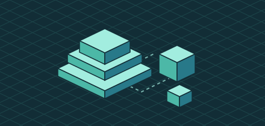
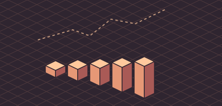

Infrastructure
Provisioning Amazon EKS
Define a Kubernetes environment from its network foundation to its managed worker nodes.
Explore project →DevOps & platform engineering
I build cloud platforms and automate the path from a code commit to a running service.

Define a Kubernetes environment from its network foundation to its managed worker nodes.
Explore project →
Package a banking application with independently configurable blue and green releases.
Explore project →
Surface CPU and memory pressure in a lightweight Flask dashboard.
Explore project →Build repeatable cloud environments with Terraform modules, governed AWS accounts, networking and managed Kubernetes clusters.
Automate builds, scans and deployments. Package workloads with Helm and manage releases through Git-backed Kubernetes manifests.
Design dashboards and alerts around service availability, latency, error rates and infrastructure health.
Automate Windows administration, Linux health checks and patching with reusable scripts and configuration management.